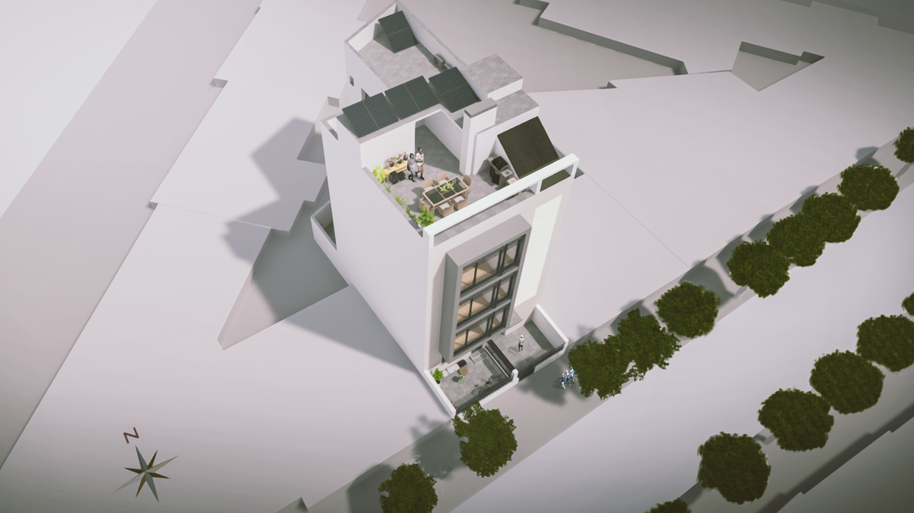
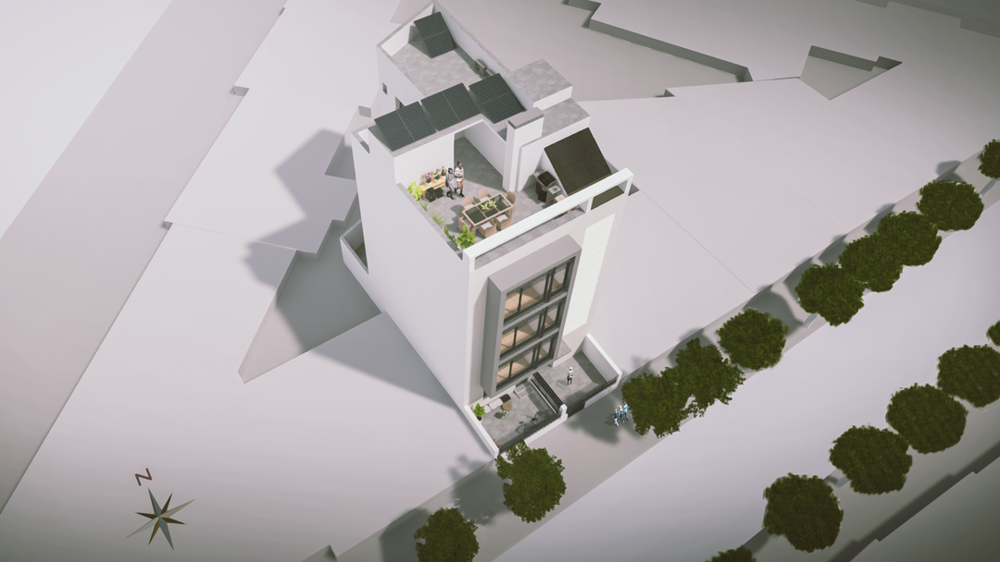

María Josefa Segovia nº 33
Información de la promoción
Promoción de 4 viviendas en la zona Nervión - Huerta de Santa Teresa, la que será la nueva zona de expansión y
servicios de Sevilla.
Viviendas de 3 dormitorios, vestidor y 2 baños equipadas con altas calidades de construcción.
Obras comenzadas.
 

Memoria de calidades
Estructura
- Sistema bidireccional de hormigón armado, constituido por forjados de losa armada de 30 cm y pilares de
hormigón armado.
Cubierta
- Cubierta invertida plana a la andaluza de alto aislamiento térmico y acabada con baldosa de gres
porcelánico.
Cerramientos exteriores
- Fachada principal de ladrillo cara vista del tipo Malpesa de color blanco, cámara de 30 mm, aislamiento
acústico y térmico de lana de roca de 80 mm y doble placa de cartón/yeso de 12,50 mm cada una.
Carpinteria exterior
- Carpintería de altas prestaciones térmicas y acústicas de aluminio lacado con rotura de puente térmico.
- Vidrios de 6 y 4+4 con cámara de12 mm o similar.
- Persianas enrollables de lamas de aluminio térmico y cajón aislado de color idéntico a la carpintería.
- Barandillas y rejas metálicas de pletinas y cuadradillos de acero.
Carpinteria interior
- Puerta de acceso a la vivienda blindada con plancha de acero galvanizado en su interior y rechapada a dos
caras en madera, con aislamiento acústico de 35 dBA, cerradura de seguridad de 3 puntos y mirilla óptica.
- Puertas interiores de DM lacadas en blanco.
- Frente de armarios empotrados con puertas con idénticas características a las interiores de paso.
Particiones interiores
- Tabiquería interior de viviendas con placas de cartón/yeso en cada cara de 12,50 mm.
- Zonas comunes con fábrica de ladrillo de 12 cm enfoscado y trasdosado autoportante con aislamiento de lana
de roca y con doble placa de yeso laminado.
Acabados
- En suelos, pavimento de gres porcelánico, siendo antideslizante en terrazas de áticos y patios.
- En paredes, pintura plástica. En la zona de aguas de los baños, aplacado de gres porcelánico rectificado.
- En Fachadas exteriores, revoco de acabado fino.
- Falsos techos de placa de yeso laminado en zonas señaladas y en zonas de ubicación de máquinas interiores de
climatización será registrable con perfilería semioculta.
Fontaneria, climatización y ventilación
- Instalación de climatización frío-calor centralizada por vivienda de marca reconocida en el mercado, con
unidad interior de diseño integrado y unidad exterior en terraza común de planta ático.
- Sistema de ventilación en viviendas con cumplimiento del Código Técnico de la Edificación.
- En cocinas, conductos independientes para campana.
Aparatos sanitarios y griferias
- Sanitarios de porcelana vitrificada en color blanco de primera marca del mercado.
- Mueble de baño con cajonera.
- Grifería monomando, empotrada en ducha.
- Plato de ducha extraplano blanco.
Electricidad y telecomunicaciones
- Las viviendas, están dotadas de los elementos que marca el Reglamento Electrotécnico de Baja Tensión, con
grado de electrificación elevada.
- Antena colectiva TV/FM y preinstalación de antena parabólica con derivación en cada vivienda.
- Tomas de telecomunicaciones en salón comedor y dormitorio principal.
- Instalación de videoportero.
- Iluminación de espacios colectivos con tecnología Led y detectores de presencia para minimizar su consumo y
sus gastos de mantenimiento.
Zonas comunes
- Portal y zonas comunes del edificio con solería de gres porcelánico antideslizante.
- Ascensor.